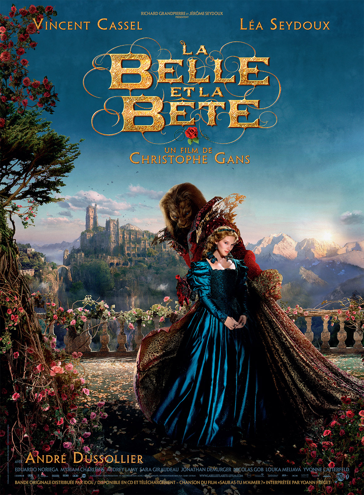

When the merchant arrives home, he gives all his children jewels, money and clothing, but tries to hide the secret from Beauty. Eventually, he breaks, and tells them everything. His sons intend to fight the beast, but the merchant persuades them that it is a pointless endeavour. Beauty agrees to go the the castle. When she arrives, she is received graciously, and informed that she is now mistress of the castle. The beast gives her expensive and lavish clothing and food, and carries on lengthy conversations with her. Every night he proposes to marry her, and every night she turns him down. After each refusal, Beauty dreams of a handsome prince who pleads with her to answer why she keeps refusing him, to which she replies that she cannot marry the Beast because she loves him only as a friend.
For several months, Beauty lives a life of luxury at the Beast's palace, having every whim catered to by invisible servants, with no end of riches to amuse her and an endless supply of exquisite finery to wear. Eventually, she becomes homesick and begs the Beast to allow her to go see her family. He allows it on the condition that she returns exactly a week later. Her older sisters are surprised to find her well fed and dressed in finery.
Context
Beauty's sisters represent the traditional view of courtship in the Victorian era. Their only ambitions are of material wealth and societal status. This story was written almost immediately before the French Revolution, at a time when the middle class had rising tensions with the royalty. Villeneuve offers a backward-looking endorsement of nobility, and a flattering and conservative portrait of the ancient regime. It seems that her aim was to "Put the Bourgeoisie in their place".
The story shares elements with Apuleius's The Golden Ass, a Greek myth. Psyche's beauty angers the goddess Aphrodite, who sends her son, Cupid, to punish her. Instead, Cupid falls in love. Offered up on Apollo’s command as a sacrifice to a monster by her father the king, Psyche is carried off to a beautiful palace where she spends every night in darkness with a lover she promises never to look upon, who she assumes to be the monster. When she is persuaded to kill him, the candle she smuggles in to the room reveals her lover to be Cupid, who flees, angered by Psyche’s betrayal. The unhappy Psyche must win him back by going on a quest to placate the jealous Venus. She wins through, and Cupid begs, successfully, for her to be made immortal. However, while the original artistic interpretations show Psyche/Beauty simply as a love interest of Cupid/Beast, Villeneuve represents her as an active protagonist, where the Beast must also learn to love. This leads to the conclusion that the story was also designed to contribute to the Women's Rights movements that had started appearing.
Summary
While a highly entertaining read, Beauty and the Beast also serves as a window into 18th century France, and the beliefs of the common people. It is one of the greatest stories of all time.